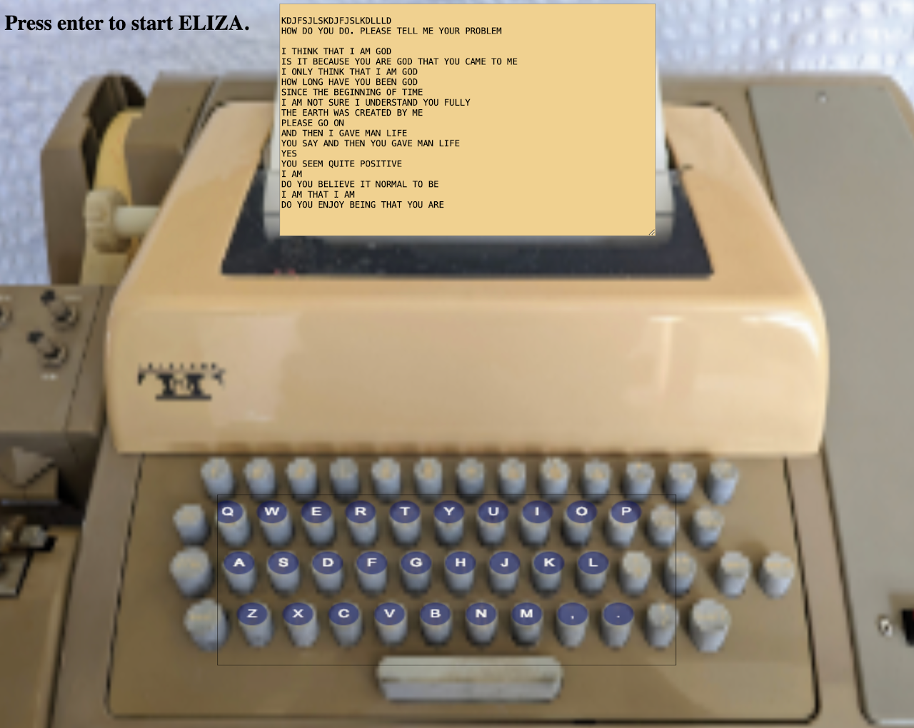

Here are a number of ways that you can run an ELIZA yourself:
The simplest way to run an ELIZA that is essentially identical to the original, is to go here:
https://anthay.github.io/eliza.html
This was written in Javascript by Anthony Hay, who also wrote the most accurate C++ version(described below). Both versions closely follow Joseph Weizenbaum’s description in his January 1966 Communications of the ACM paper, and are controlled by scripts that are identical to the one given in the appendix to that paper. Both versions exactly recreate the conversation in the 1966 paper. (In the js version, above, you can type: *cacm and it will run through the original conversation!)
The code for the above js version (linked above) is available here: https://github.com/anthay/ELIZA/blob/master/src/eliza.html
By far the ELIZA most accurate reproduction of the original ELIZA is Anthony Hay's C++ implementation.
You can run Anthony's C++ version of ELIZA yourself from the code, or by following these steps:
1. Go to https://raw.githubusercontent.com/anthay/ELIZA/master/src/eliza.cpp, select all the text and copy to the clipboard.
2. Go to an online C++ repl* page, for example: https://www.online-cpp.com/ or https://cpp.sh/ or https://replit.com/languages/cpp (You have to create a free account on replit, but at this writing the others are open-access without having to register.)
3. Create a C++ repl and paste in the code that you copied above. (For some of the above-linked sites you're already in a C++ repl.)
4. Press the "Run" button and you'll be able to interact with ELIZA running the original DOCTOR script in the console window.
(* A "repl" -- pronounced a bit like "apple" -- is a "read eval print loop". It lets you run programs directly in a web-window.)
We're working on a simulation of what is was like to use ELIZA in the mid 1960s, by embedding Antony Hay's ELIZA in an ASR33 simulator. So far the effort is pretty simplistic, but has basic sanity. Check it out here: [click here to execute the simulator in your browser (chrome works best)]
Here's the source code: https://github.com/jeffshrager/elizagen.org/tree/master/ELIZA33/current
